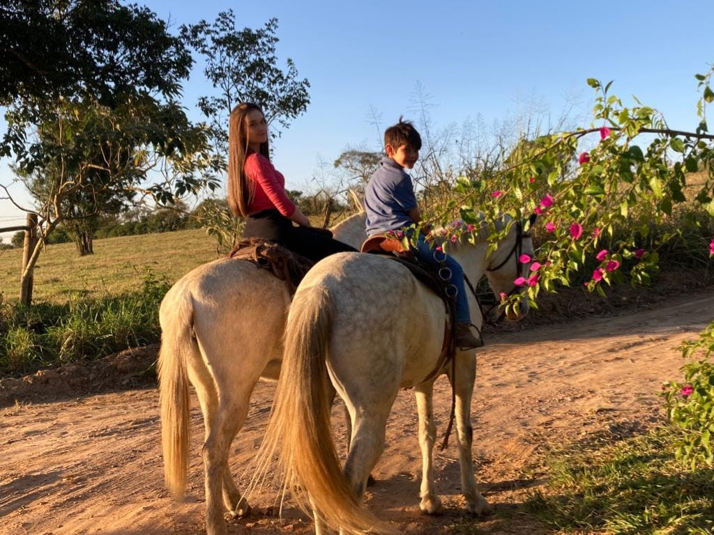

28 junho de 2023
Minas Gerais
Se você realmente ama a natureza, encontrará beleza em todos os lugares.
"Quando a última árvore for cortada, o último peixe for pescado e o último rio envenenado, só então perceberemos que não se pode comer dinheiro."
28 junho de 2023
Elias Fausto

Se tem uma coisa que eu amo, é respirar ar puro, comer frutas direto do pé, o silêncio da natureza, a paz, o vento fresco, o som dos pássaros, e dar uma voltinha por ai de cavalo.